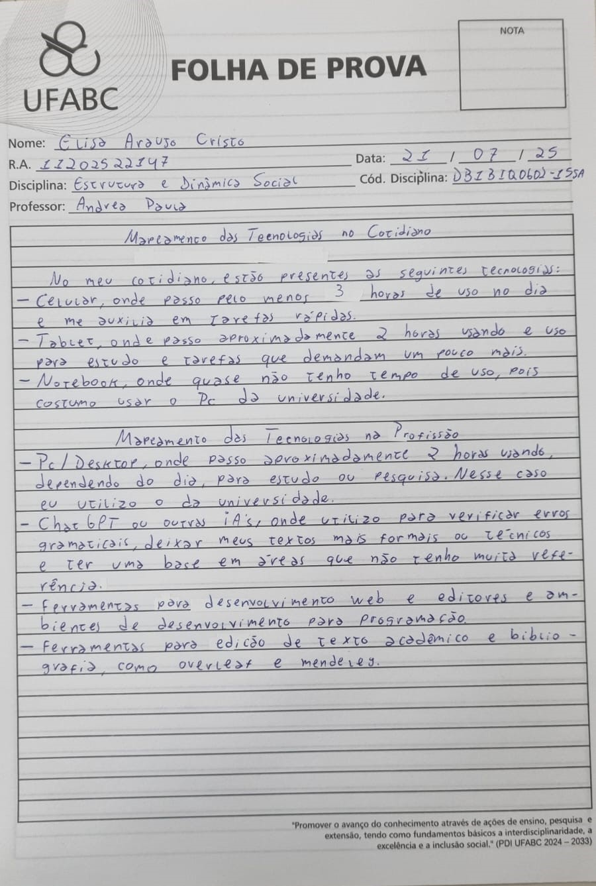

zimes.dev
Universidade Federal do ABC
Esta é uma página dedicada à divulgação de conteúdos relacionados à minha graduação.
Nela, compartilharei materiais, reflexões e realizações ao longo da minha trajetória.

Síntese crítica e autoavaliação dos aprendizados
Estrutura e Dinâmica Social | 04-08-2025
Na aula final da disciplina Estrutura e Dinâmica Social, realizada em 04 de agosto de 2025, realizamos
uma atividade de reflexão e autoavaliação com base nos conhecimentos construídos ao longo do curso. Foi
um momento dedicado à análise crítica das experiências individuais à luz dos conceitos abordados, com
foco na maneira como as estruturas sociais influenciam a vida dos sujeitos.
Durante a atividade, revisitei minha trajetória, considerando marcadores sociais como gênero, classe,
raça, território, religião e sexualidade. Refleti sobre como esses elementos estruturam oportunidades
e experiências, ampliando meu entendimento sobre desigualdades, diversidade e identidade. O conceito
de interseccionalidade, estudado a partir de Kimberlé Crenshaw, foi essencial para compreender como
diferentes opressões se combinam nas vivências cotidianas.
Além disso, foram discutidos temas como:
- Cultura, religiosidades e identidades sociais
- Desigualdades sociais e relações étnico-raciais
- Preconceitos, estereótipos e etnocentrismo
- Contribuições das religiões na sociedade
- Crise climática, tecnologias e justiça social
As atividades realizadas ao longo da disciplina, como trocas de objetos simbólicos, narrativas pessoais
e textos teóricos, contribuíram para o desenvolvimento de uma postura crítica, reflexiva e empática
diante das estruturas sociais.
Finalizo a disciplina com uma compreensão mais profunda sobre meu lugar no mundo e sobre como as dimensões
sociais moldam nossas vidas. Essa experiência acadêmica me transformou enquanto estudante, cidadã e futura profissional.

.jpeg)
.jpeg)
Mapeamento de Tecnologias
Estrutura e Dinâmica Social | 28-07-2025 e 31-07-2025
Aula 12 - 28-07
Temas:
- Crise climática e
- Decrescimento, pós-crescimento
Objetivos de Aprendizagem:
- Estudar a crise climática e o Antropoceno, bem como suas relações com o modelos de desenvolvimento da ciência e
tecnologia na sociedade capitalista e seus impactos nas estruturas e dinâmicas sociais contemporâneas;
- Conhecer quais são os grupos que apresentam propostas de enfrentamento da crise climática, com vistas a alterar
as dinâmicas e estruturas sociais contemporâneas.
- Aprender sobre outras propostas de desenvolvimento econômico e seus impactos nas estruturas e dinâmicas sociais
que considerem as perspectivas do decrescimento e do pós-crescimento.
Aula 13 - 31/07
Temas:
- Pensamento decolonial, saberes ancestrais e análises das estruturas e dinâmicas sociais contemporâneas;
Objetivos de Aprendizagem:
- Conhecer outras perspectivas de análise das estruturas e dinâmicas sociais no século XXI;
- Compreender aspectos emergentes acerca de formações interdisciplinares e atuações profissionais frente às transformações das
estruturas e dinâmicas da sociedade atual.
Leituras Aula 12: (clique)
Palestra Érica Guerreiro: Mudanças Climáticas e Meio Ambiente
Antropoceno: a Era do colapso ambiental, José Eustáquio Diniz Alves, CEE-Fiocruz, 2020
Introdução - Decrescimento, Giorgos Kallis, Federico Demaria e Giacomo D'Alisa, In: Decrescimento: vocabulário para um novo mundo, Giacomo D'Alisa e Giorgos Kallis, pp. 21-42
Vídeos Aula 12: (clique)
Decrescimento
Crescimento econômico pra que? PRA QUEM? - PorQueNão? conversa sobre Decrescimento
Leituras Aula 13: (clique)
MOORE, Carlos. Racismo e sociedade: novas bases epistemológicas para entender o racismo, Capítulo 9
Vídeos Aula 13: (clique)
Os vídeos são um interessante recurso para te ajudar a compreender os temas e discussões com novas perspectivas
Minha atividade:

Mapeamento de Tecnologias
Estrutura e Dinâmica Social | 21-07-2025
Durante a aula, foi realizada uma atividade reflexiva e investigativa sobre as transformações no
mundo do trabalho a partir do avanço das tecnologias, com destaque para o uso de inteligências
artificiais e o papel crescente das empresas de tecnologia na organização das rotinas profissionais.
A proposta teve como objetivo estimular a observação crítica sobre como essas inovações impactam
tanto o cotidiano pessoal quanto o ambiente profissional, muitas vezes de forma imperceptível.
A partir disso, os participantes foram convidados a listar e comentar diferentes tecnologias
que utilizam em seu dia a dia, como smartphones, aplicativos de comunicação, plataformas de
videoconferência, softwares de automação, sistemas de inteligência artificial generativa,
entre outras ferramentas digitais que otimizam tarefas e transformam a dinâmica do trabalho
contemporâneo. A atividade também permitiu discutir os limites e potencialidades dessas tecnologias,
considerando aspectos como eficiência, dependência digital, ética no uso de dados e novas formas
de controle e produtividade no contexto das empresas de tecnologia.
Mapeamento de Tecnologias
Estrutura e Dinâmica Social | 21-07-2025
Durante a aula, foi realizada uma atividade reflexiva e investigativa sobre as transformações no
mundo do trabalho a partir do avanço das tecnologias, com destaque para o uso de inteligências
artificiais e o papel crescente das empresas de tecnologia na organização das rotinas profissionais.
A proposta teve como objetivo estimular a observação crítica sobre como essas inovações impactam
tanto o cotidiano pessoal quanto o ambiente profissional, muitas vezes de forma imperceptível.
A partir disso, os participantes foram convidados a listar e comentar diferentes tecnologias
que utilizam em seu dia a dia, como smartphones, aplicativos de comunicação, plataformas de
videoconferência, softwares de automação, sistemas de inteligência artificial generativa,
entre outras ferramentas digitais que otimizam tarefas e transformam a dinâmica do trabalho
contemporâneo. A atividade também permitiu discutir os limites e potencialidades dessas tecnologias,
considerando aspectos como eficiência, dependência digital, ética no uso de dados e novas formas
de controle e produtividade no contexto das empresas de tecnologia.
Mapeamento de Tecnologias
Estrutura e Dinâmica Social | 21-07-2025
Durante a aula, foi realizada uma atividade reflexiva e investigativa sobre as transformações no
mundo do trabalho a partir do avanço das tecnologias, com destaque para o uso de inteligências
artificiais e o papel crescente das empresas de tecnologia na organização das rotinas profissionais.
A proposta teve como objetivo estimular a observação crítica sobre como essas inovações impactam
tanto o cotidiano pessoal quanto o ambiente profissional, muitas vezes de forma imperceptível.
A partir disso, os participantes foram convidados a listar e comentar diferentes tecnologias
que utilizam em seu dia a dia, como smartphones, aplicativos de comunicação, plataformas de
videoconferência, softwares de automação, sistemas de inteligência artificial generativa,
entre outras ferramentas digitais que otimizam tarefas e transformam a dinâmica do trabalho
contemporâneo. A atividade também permitiu discutir os limites e potencialidades dessas tecnologias,
considerando aspectos como eficiência, dependência digital, ética no uso de dados e novas formas
de controle e produtividade no contexto das empresas de tecnologia.
Mapeamento de Tecnologias
Estrutura e Dinâmica Social | 21-07-2025
Durante a aula, foi realizada uma atividade reflexiva e investigativa sobre as transformações no
mundo do trabalho a partir do avanço das tecnologias, com destaque para o uso de inteligências
artificiais e o papel crescente das empresas de tecnologia na organização das rotinas profissionais.
A proposta teve como objetivo estimular a observação crítica sobre como essas inovações impactam
tanto o cotidiano pessoal quanto o ambiente profissional, muitas vezes de forma imperceptível.
A partir disso, os participantes foram convidados a listar e comentar diferentes tecnologias
que utilizam em seu dia a dia, como smartphones, aplicativos de comunicação, plataformas de
videoconferência, softwares de automação, sistemas de inteligência artificial generativa,
entre outras ferramentas digitais que otimizam tarefas e transformam a dinâmica do trabalho
contemporâneo. A atividade também permitiu discutir os limites e potencialidades dessas tecnologias,
considerando aspectos como eficiência, dependência digital, ética no uso de dados e novas formas
de controle e produtividade no contexto das empresas de tecnologia.
Clique
aqui para retornar ao início.
Todos os direitos reservados a Elisa Cristo @2025.